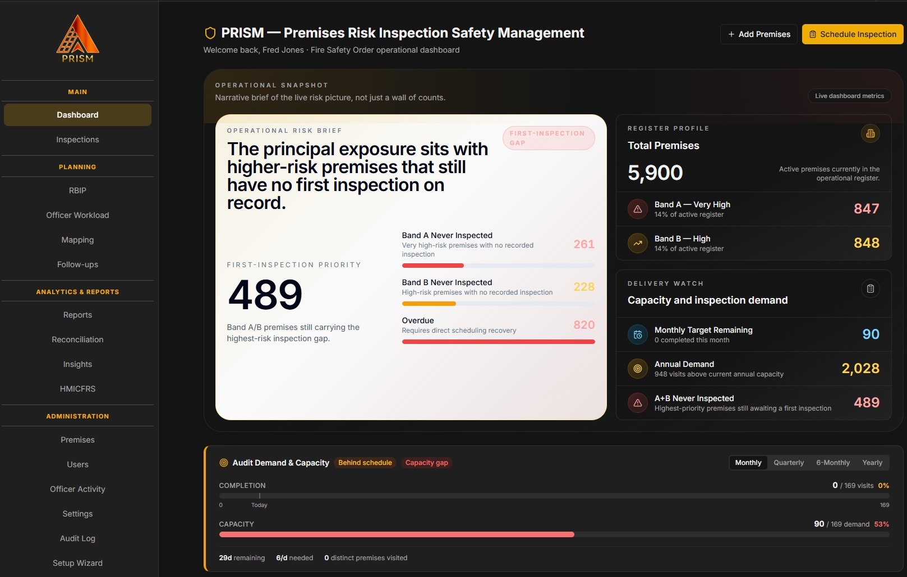
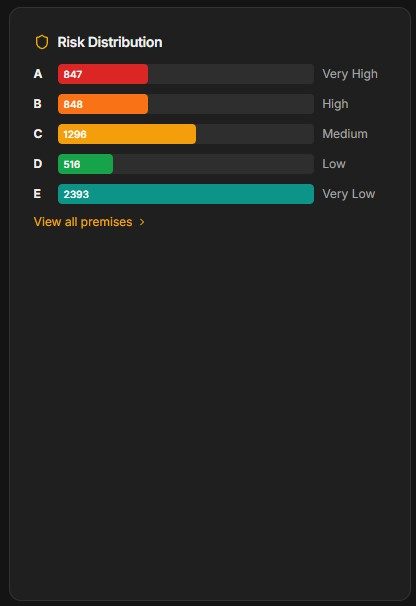
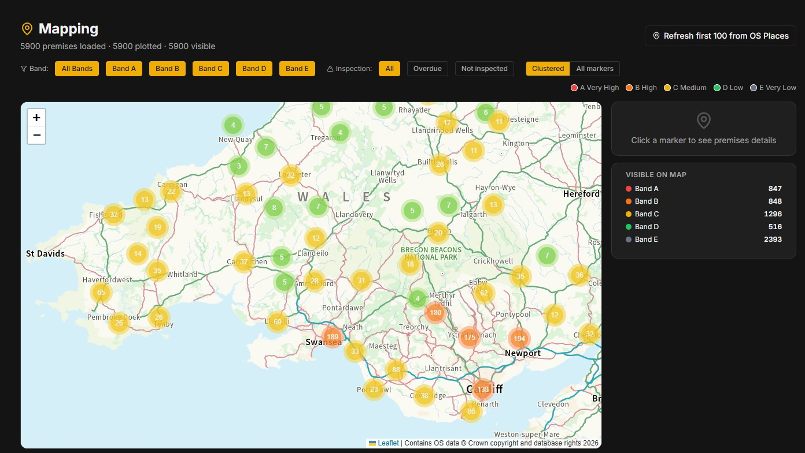
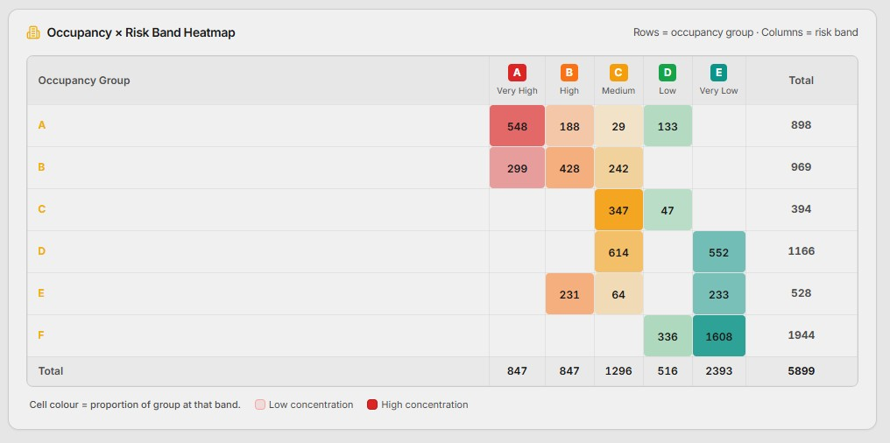
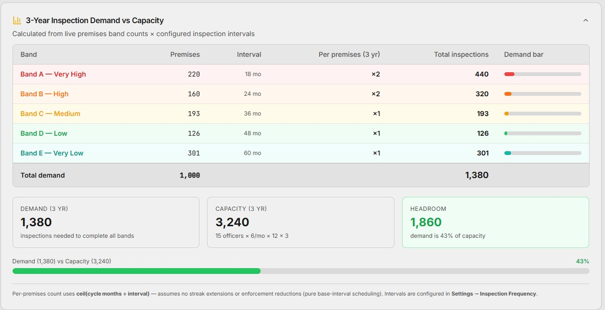
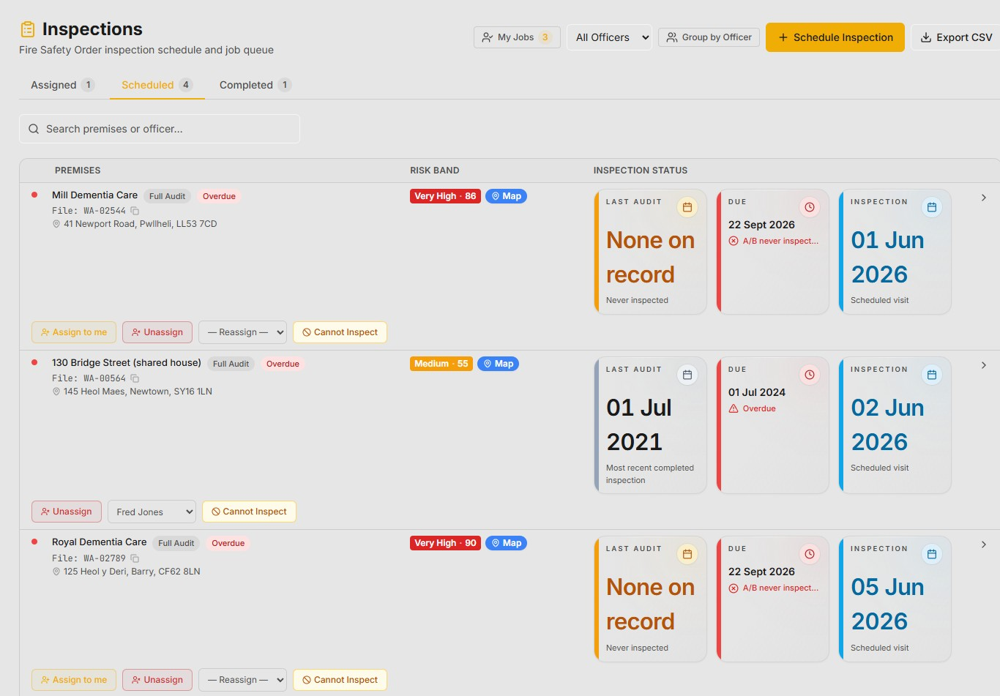
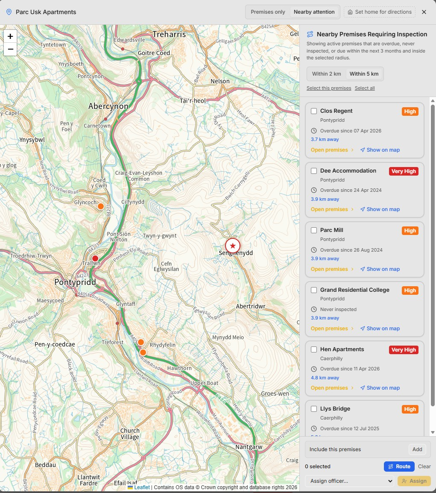
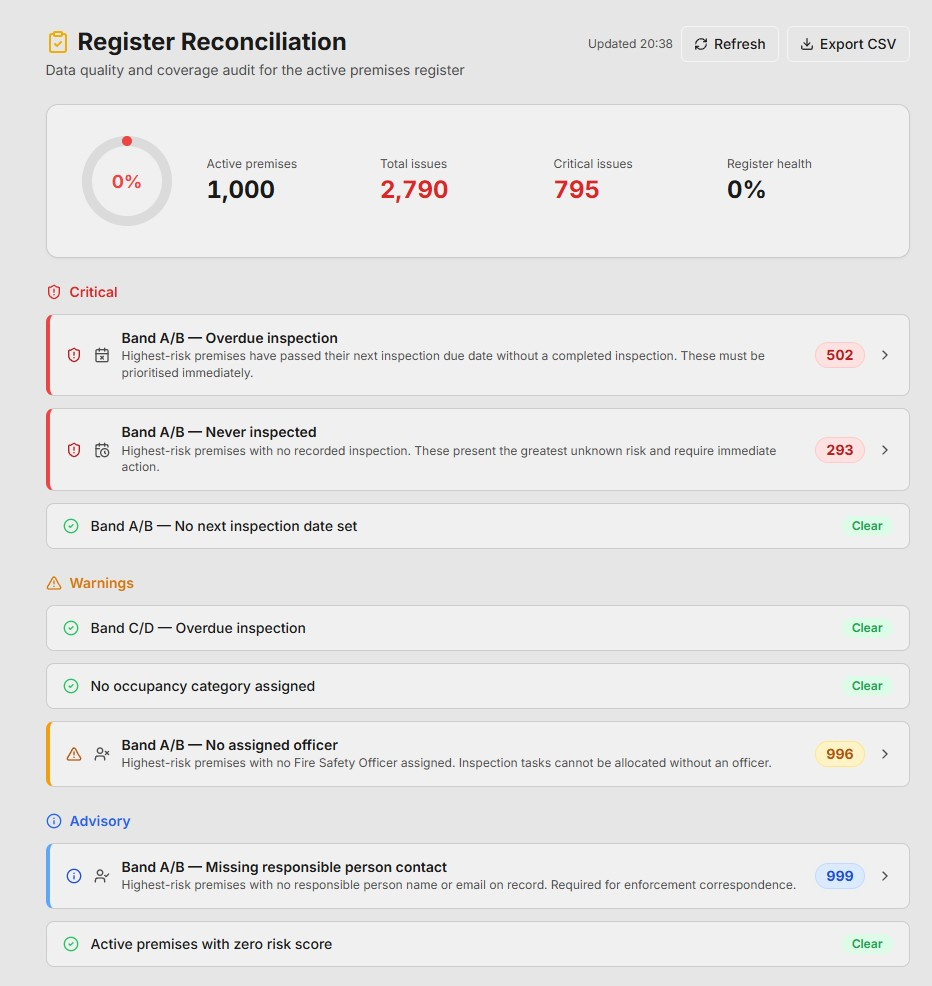

Risk-Based Fire Safety
Inspection Software
Prism is an intuitive risk-based inspection platform for regulated premises, helping services focus inspection activity where it matters most. Built with industry professionals, it supports evidence-led inspection planning, consistent field reporting, action tracking and clear regulatory assurance.


Intelligence built into every layer
From live mapping to capacity planning, PRISM gives protection teams the analytical depth to inspect with purpose and govern with confidence.
See every premises.
Understand every risk.
Your full premises estate plotted and filterable by risk band, inspection status, and location. Click any cluster to surface premises details, risk score, and inspection history; no searching required.
- Filter by risk band, inspection status, or never-inspected
- Clustered and individual marker views across the estate
- Refreshes live from OS Places data

Understand where risk is concentrated.
The Occupancy × Risk Band Heatmap cross-references occupancy group against risk band across the full estate. Identify patterns that static reports miss and target programme effort accordingly.
- Occupancy group × risk band cross-analysis
- Cell colour indicates concentration within each group
- Exportable for service planning and HMICFRS briefings

Know exactly what your programme demands.
The 3-Year Demand vs Capacity model calculates how many inspections each band requires against available officer capacity before you commit the programme. Headroom and shortfall visible at a glance.
- Calculated from live band counts and configured intervals
- Demand, capacity, and headroom in one view
- Supports resource planning and service-level decisions

The information required to inspect with purpose
At login, officers see risk-ranked work, due inspections, overdue premises, and changes in premises information; helping them plan activity with confidence before they leave the office.

Risk-ranked and ready to act
A structured job queue showing assigned, scheduled, and completed inspections; with risk band, due dates, last audit, and officers visible at a glance. Filter by officer or schedule the next visit directly.

Premises nearby that need attention
While on-site, surface overdue, never-inspected, and due premises within 2 or 5 km. With routing and batch assignment tools so officers can identify opportunities to capture more outstanding inspections in one visit… improving efficiency and reducing overall service risk.

Know where data gaps are creating risk
The Register Reconciliation view surfaces critical issues; overdue B and A/B, never-inspected high-risk premises, and unassigned officers… improving compliance and reducing risk.
Built to support protection teams.
Designed for inspection assurance.
PRISM is designed for Fire and Rescue Services managing complex protection activity, where premises visibility, inspection assurance, and sound governance matter.
By combining live premises intelligence, structured risk scoring, mapping, planning, and digital inspection management, PRISM turns fragmented records into a clear, trusted picture of inspection demand, premises risk, and programme delivery.
This helps services plan inspections earlier, focus activity where risk is greatest, and strengthen confidence that inspection decisions are proportionate, evidence-based, and defensible under scrutiny.